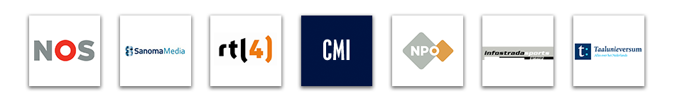

Een greep uit mijn opdrachtgevers

Goed om te weten
- Freelance interaction designer, ik ontwerp websites en apps vanuit het oogpunt van de bezoeker/klant. Ervaring met scrum, agile en watervalmethode.
- Flowcharts, wireframes, interface design, interactive prototypes en ervaring met uitvoeren en begeleiden van gebruikstests.
- Bachelor diploma in communicatie & multimedia design en gespecialiseerd in innovatief en toch bruikbaar ontwerp.
- Programmeren en scripten doe ik ook, vandaar mijn bovengemiddelde kennis van techniek als ontwerper.
- Mijn kantoor staat in Zaandam maar ik werk ook graag buiten de deur.
- Ervaring met het ontwerpen van grote websites en apps zoals NOS.nl, de NOS app en EredivisieLive.nl.
Functieomschrijvingen voor wat ik doe
- Interactie-ontwerper
- Interaction designer
- Information architect
- Interface designer
- Webdesigner
- Visual Interface Designer
- Full stack designer
- Prototype developer
- Creative coder
- Maker
- Front-end developer
Voorbeelden van mijn werk
Andere projecten waar ik aan gewerkt heb: Screenshot app, NLbuzz, EYOF 2013, CMI Holding, WK Voetbal 2012 Tweedescherm app, Eredivisie Live Sidekick, EredivisieLive.nl (nu FOX Sports), CentralParQ Software, Pow-Wow, Sport.nl, Nieuwsuur, NOS Jeugdjournaal, NOS WK Voetbal 2010, NOS WK Voetbal 2010 Tweedescherm app, NOS.nl website, NOS Olympische Winterspelen 2010 website, NOS PS3 Video app, NOS Philips NetTV Video app, NOS Tour de France subsite, NOS Olympische Spelen 2008, Taalunieversum, Taaladvies.net, Woordenlijst.org, Vinoo en nog veel meer.